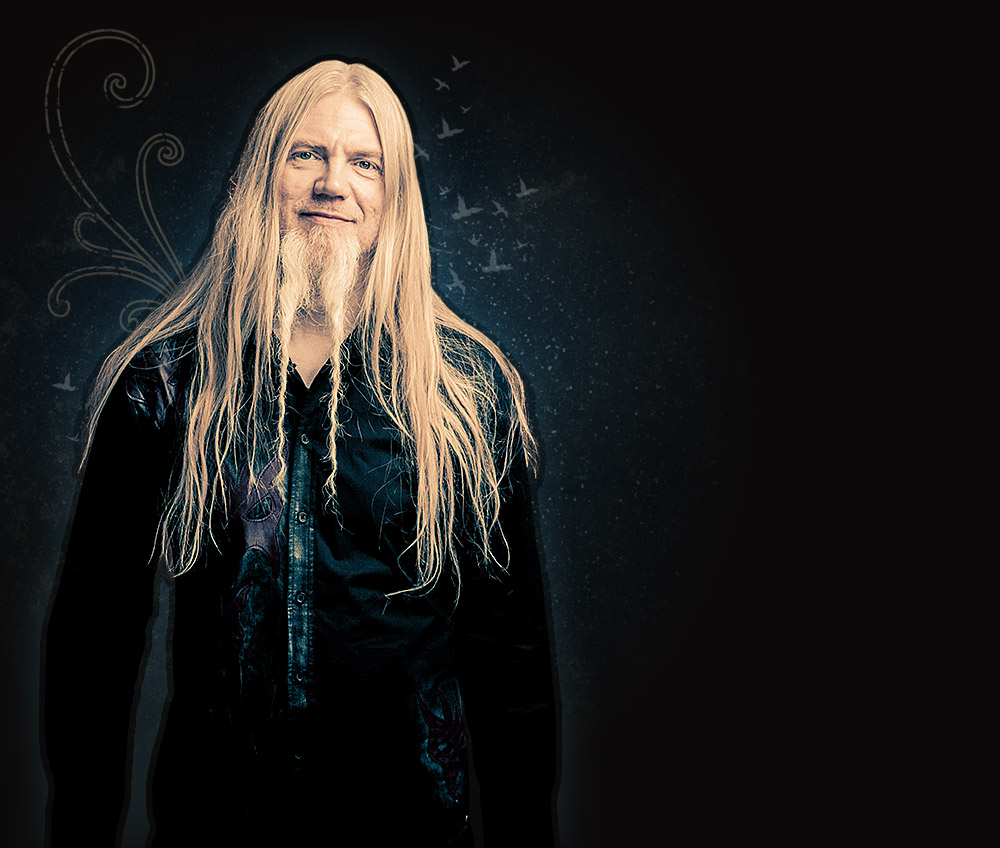

Members

Floor Jansen
Lead Vocals

Tuomas Holopainen
Keyboards, Piano, and Synthesizers

Marco Hietala
Bass, Vocals, and Acoustic Guitar

Emppu Vuorinen
Guitar and Bass

Jukka Nevalainen
Drums and Percussion

Troy Donockley
Uilleann Pipes, Tin Whistle, Low Whistle, Guitars, Bouzouki, Bodhrán, and Backing Vocals
#radial-center {
/* fallback */
background-color: #2F2727;
background-image: url(images/radial_bg.png);
background-position: center center;
background-repeat: no-repeat;
/* Safari 4-5, Chrome 1-9 */
/* Can't specify a percentage size? Laaaaaame. */
background: -webkit-gradient(radial, center center, 0, center center, 460, from(#1a82f7), to(#2F2727));
/* Safari 5.1+, Chrome 10+ */
background: -webkit-radial-gradient(circle, #1a82f7, #2F2727);